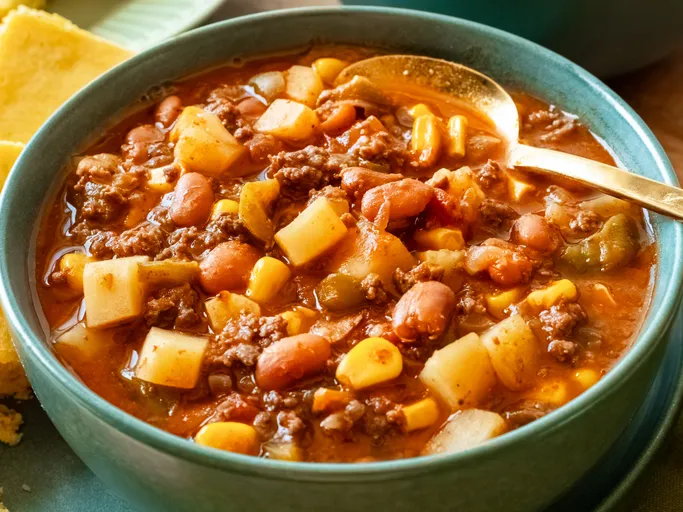

Home

Description
- 1 pound ground beef
- 1 onion, chopped
- 1 large green bell pepper, chopped
- 4 cups beef broth
- 1 (14.5 ounce) can Mexican-flavored diced tomatoes, undrained
- 1 (15.5 ounce) can pinto beans, undrained
- 1 (15.25 ounce) can corn, drained
- 1 large baking potato, peeled and cubed
- 1 tablespoon chili powder
- 1 tablespoon Worcestershire sauce
- 1 teaspoon paprika
- 1/2 teaspoon ground cumin
- salt and freshly ground black pepper to taste
This hearty one-pot soup features ground beef and canned pantry staples.
Reviewers report that this dish freezes and reheats very well.